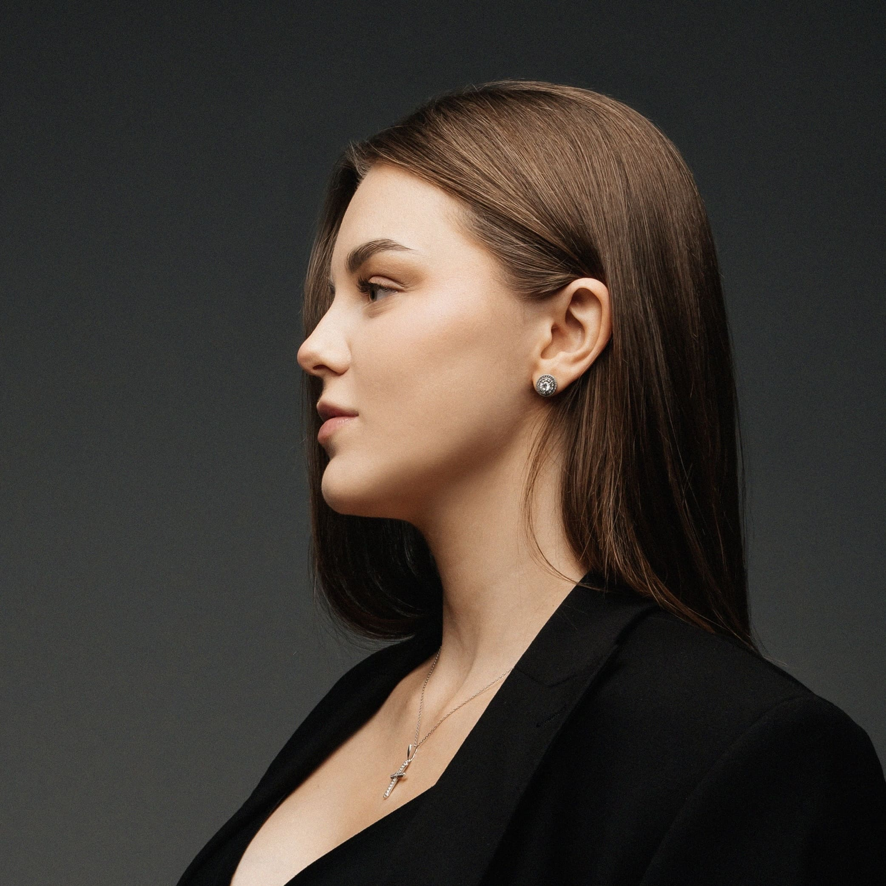

Нутрициолог Ольга Никонова
Обо мне

Ольга Никонова
Нутрициолог, специалист по питанию.
Мои контакты
Забронировать место на сопровождение по питанию
Связаться со мной в WhatsApp
Телеграмм канал о питании
Instagram
Услуги
Договор оферта